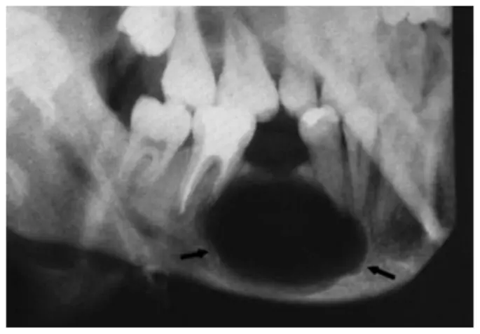
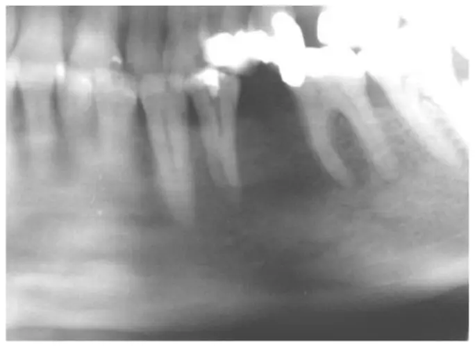

نسخه استخراجشده؛ ترجمه یا تأیید علمی انجام نشده است. وضعیت: captured
یک آزمون ساده و بهیادماندنی: «اگر بتوان با یک مداد خیالی حاشیهی ضایعه را بهطور تکرارپذیر و با اطمینان ردیابی کرد، حاشیه احتمالاً واضح است.»

و یک ملایمت: «دندانپزشک نباید بیش از حد نگران شود اگر برخی نواحی نامشخص باشند؛ این میتواند به دلیل شکل ضایعه یا جهت پرتو در آن محل خاص باشد. ضایعهی واضحمرز ضایعهای است که بیشترِ محیطش واضح باشد.» در مقابل، حاشیهی نامشخص «حاشیهای است که ترسیم دقیق و تکرارپذیرش دشوار است».
مفهوم کلیدی این درس:منطقهی گذار (zone of transition). یعنی «شیوهای که الگوی استخوان نرمال به الگوی استخوان غیرطبیعی ضایعه گذار میکند و بالعکس».
و دو مثال متضاد: «ضایعهای با کورتکس نازک رادیواوپک در محیطش، منطقهی گذار باریک نشان میدهد؛ یعنی تغییر الگوی استخوان از ضایعه، از عرض کورتکس، تا استخوان نرمال مجاور باریک است. در مقابل، ضایعاتی با حاشیهی اسکلروتیک منطقهی گذار نسبتاً پهنی نشان میدهند.»
چهار نوع حاشیهی واضح:
حاشیهی نامشخص «حاشیهای است که تفکیکش دشوار است» و منطقهی گذارش «اغلب تدریجیتر و پهنتر». ولی دو نوع کاملاً متفاوت دارد — و تفاوتشان تشخیص را عوض میکند.

۱) حاشیهی بلندینگ (blending) — «تمرکز این مشاهده روی ترابکولهاست نه روی فضاهای رادیولوسنت مغز استخوان.» یعنی الگوی ترابکولار ضایعه بهتدریج در الگوی نرمال حل میشود. نمونهها: استئیت اسکلروزان و دیسپلازی فیبرو.
۲) حاشیهی اینویزیو (invasive) — «حاشیهای که در آن ترابکول کمی یا هیچ میان محیط ضایعه و استخوان نرمال وجود ندارد» و منطقهی گذار «معمولاً پهن است». و تفاوت کلیدیاش با بلندینگ: «برخلاف حاشیهی بلندینگ، تمرکز این مشاهده روی رادیولوسنسی بزرگشونده به قیمت ترابکولهای استخوان نرمال مجاور است.»
و نام دیگرش: پرمیتیو (permeative) — «چون ضایعه به نظر میرسد گرداگرد یا از میان ترابکولهای موجود رشد میکند و امتدادهای رادیولوسنتِ انگشتمانند یا خلیجمانند به درون استخوان نرمال مجاور میسازد». این رشد میتواند به بزرگ شدن فضاهای مغز استخوان در محیط بینجامد. و حکمش: «حاشیههای اینویزیو معمولاً با رشد سریع همراهاند و در ضایعات بدخیم دیده میشوند.»
حالا شکل. ضایعه ممکن است شکل خاصی داشته باشد یا نامنظم باشد. دو شکل نامدار هست:
و یک تذکر اصطلاحشناختی مهم: «گاهی ضایعهای با محیط اسکالوپدار مولتیلوکولار نامیده میشود؛ ولی اصطلاح مولتیلوکولار برای توصیف ساختار داخلی کنار گذاشته میشود.» یعنی اسکالوپ ویژگیِ حاشیه است و مولتیلوکولار ویژگیِ درون. این دو را قاطی نکن.